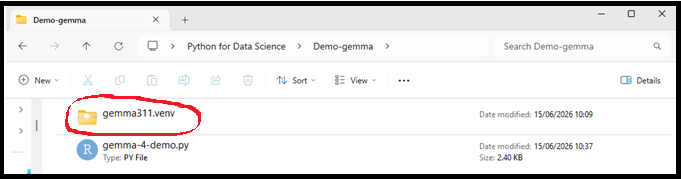
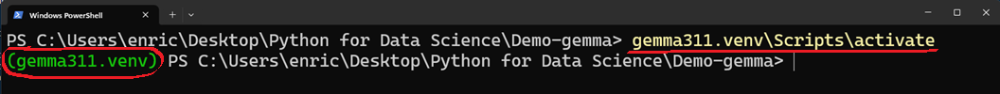
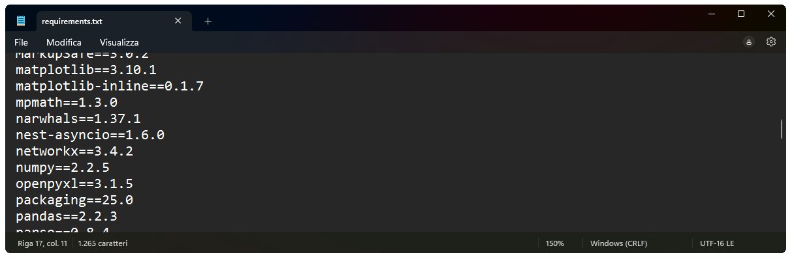
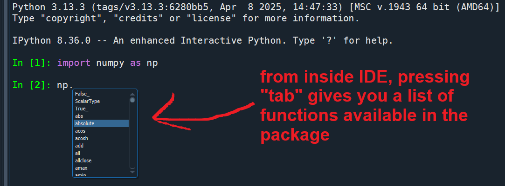
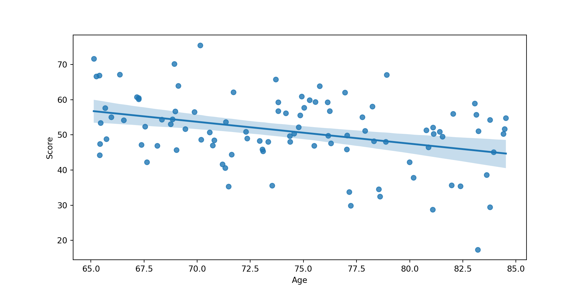
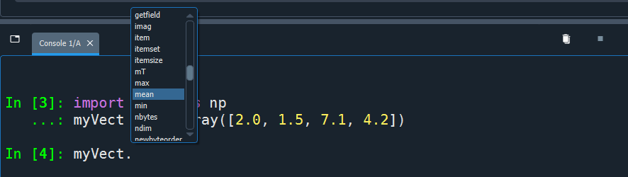

python -m venv <nameOfVenv>→ isolated Python environments that allow you to install packages and dependencies separately from your system/main Python installation. Helps avoid conflicts across projects that may require different versions of the same packages.
→ routinely used in professional projects, they are best practice for managing projects ensuring computational reproducibility
btw something similar exists in R via the renv package, although unfortunately not widely used
Practically, they are local folders with an isolated Python environment. They contain:
This folder is ideally placed inside your project directory

Create a virtual environment with this command in your bash/terminal:
then, just before using, activate it:

… from inside an IDE, you may activate the venv via specific commands like reticulate::use_virtualenv("nameOfMyVenv", required=T) (in R / RStudio), or setting the Python interpreter manually and then restarting the kernel (in Spyder)
venv, you (re)install all packages required by your project.requirements.txt file to document the exact versions of all installed packages (this is particularly useful for sharing your environment, e.g., via GitHub).
venv, activate it, and install all required packages at the exact versions specified in requirements.txt"data/myfile.csv");myProjectFolder/
├── venv/ ← virtual environment
├── data/ ← .csv, .xlsx, etc.
├── scripts/ ← .py (also .R) scripts
├── outputs/ ← different types of output files
├── notebooks/ ← markdowns, colab notebooks, etc.
├── paper/ ← in case you are writing a paper...
├── tables/ ← possibly convenient to store paper's tables
├── figures/ ← possibly convenient to store paper's figures
├── requirements.txt ← list of installed packages for reproducibility
└── README.md ← brief description of the projectInstalling, inside an IDE console or Colab:
Then, before using any of their functions, import packages and modules:
“as” gives a shorter alias to a package or module name (e.g., pd for pandas; np for numpy); this is convenient because in Python you frequently need to call different functions by always specifying the package/module name (unlike in R; unless you import individual functions, e.g., from numpy import array)
Use a function from a package, and call help:
Use tab to autocomplete and explore available functions of a package ↴

As in R, you can rely on positional order of arguments instead of naming them, or you can completely omit them if there are valid default arguments. However, it’s best practice to make all relevant arguments explicit for readability and reproducibility

In Python, objects may have functions attached to them: these are called methods, and are accessed using dot (“.”) notation (more on this later!)
Use tab to autocomplete and explore available methods of an object →

getwd() / setwd():
(in Colab, paths are relative to the notebook location in Google Drive)
save.image() of R)compact version
(the compact version is suboptimal because it doesn’t properly close the file after using, but still works)
pandas later!)from CSV
from Excel
from Ctrl+C copied elements (beautiful ❤️ but only for Windows)
rm(df)” in R)ls()” in R)dir()dir() is a built-in function that does more than just returning a list of objects in workspace; it allows you to inspect all attributes and methods of any object
['append', 'clear', 'copy', 'count', 'extend', 'index', 'insert', 'pop', 'remove', 'reverse']['all', 'any', 'argmax', 'argmin', 'argpartition', 'argsort', 'astype', 'base', 'byteswap', 'choose', 'clip', 'compress', 'conj', 'conjugate', 'copy', 'ctypes', 'cumprod', 'cumsum', 'data', 'device', 'diagonal', 'dot', 'dtype', 'dump', 'dumps', 'fill', 'flags', 'flat', 'flatten', 'getfield']['abs', 'absolute', 'acos', 'acosh', 'add', 'all', 'allclose', 'amax', 'amin', 'angle', 'any', 'append', 'apply_along_axis', 'apply_over_axes', 'arange', 'arccos', 'arccosh', 'arcsin', 'arcsinh', 'arctan', 'arctan2', 'arctanh', 'argmax', 'argmin', 'argpartition', 'argsort', 'argwhere', 'around', 'array', 'array2string']